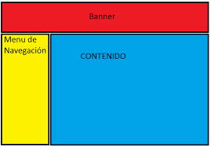

Definición. frameset -conjunto de marcos . Define la organización de los marcos dentro de la ventana del usuario. ... Con un doctype para marcos está definido como contenido de html.
Crear una página web con frames. Para crear una página web dividida en frames usaremos la etiqueta HTML < frameset>, y dentro de ella insertaremos una etiqueta < frame> por cada marco que deseemos crear, así como la etiqueta < noframes>, cuyo contenido se mostrará en los navegadores web que no soportan frames.
